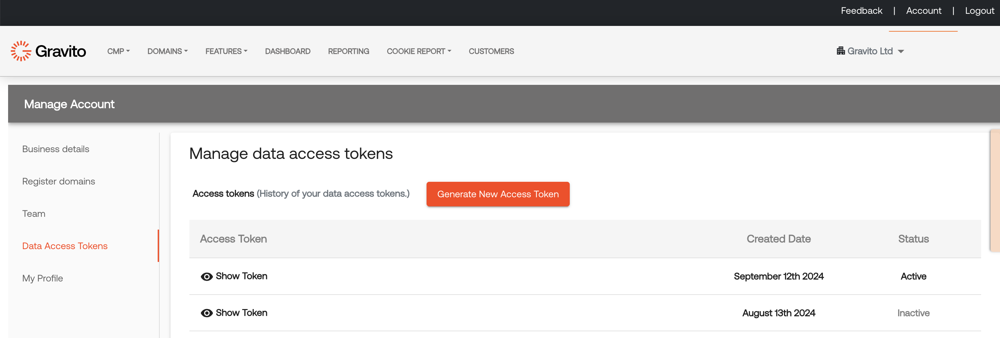
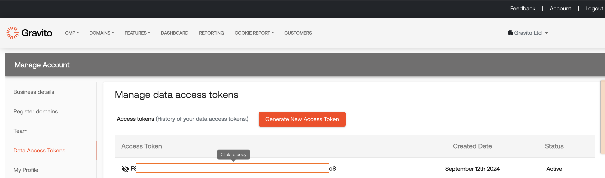

Customer data access API
Gravito provides an easy access to the customer data that gravito stores in its backend for the customers who are using Gravito's first party capabilities. Gravito provides an api using with a customer can fetch data for the last 7 days.
Create an access token
In order to access the customer data using api, you need to generate an access token using Gravito's Admin portal. Login to Admin portal and go to account section of the of the portal and select Data Access Tokens menu.

In order to generate a new token, click on the "Generate New Access Token" button. It will generate a new token and it will be available in the list below.
You can generate a new token when ever you wish to, to see the token click on "Show Token" icon, it will show the token and you would be able to copy active token in the clipboard.

How to access the customer data?
Gravito provides an open api, using which customer data can be accessed. This api returns the customer data for one domain, following details has to be passed to the api.
- domainName (name of the domain for this you are fetch data ex. gravito.net)
- access token (gravito access token generated on Admin Portal following the steps outlined in above section, this has to be passed in request header)
- gravito version (version of the Gravito's first party service that you are using, it will default to v3 if this header is not passed.)
(function () {
var xhr = new XMLHttpRequest();
xhr.open("GET", 'https://apiv2.gravito.net/api/gp/gravitocustomerdata?domainName=<yourdomain>', true);
xhr.withCredentials = true;
xhr.setRequestHeader('gravitoaccess', '<your_gravitoaccess_token_generated on admin portal>');
xhr.setRequestHeader('gravitoversion', '<your_firstparty_api_version>');
xhr.onreadystatechange = function(response) {
if(xhr.readyState == XMLHttpRequest.DONE && xhr.status == 200) {
console.log("GET response : " + response.target.response);
}
}
xhr.send();
})();
API Reponse
This api will return data into following structure
[
{
"referer": "gravito.net",
"message": "{\"i\":\"dc65b539-dd53-4a4a-a9fc-b1ab2a3c931a\",\"r\":\"gravito.net\",\"v\":\"v3\",\"e\":{\"id1\":\"abcd\",\"matchOnId\":\"Id001\"},\"k\":[],\"c\":[{\"i\":\"t\",\"c\":\"consent1\",\"s\":false,\"t\":1642690365},{\"i\":\"m\",\"c\":\"consent2\",\"s\":true,\"t\":1642690365},{\"i\":\"t\",\"c\":\"consent1\",\"s\":false,\"t\":1642691322},{\"i\":\"n\",\"c\":\"consent3\",\"s\":true,\"t\":1642691322},{\"i\":\"t\",\"c\":\"consent1\",\"s\":false,\"t\":1642691342},{\"i\":\"n\",\"c\":\"consent3\",\"s\":true,\"t\":1642691342},{\"i\":\"t\",\"c\":\"consent1\",\"s\":false,\"t\":1642691353},{\"i\":\"n\",\"c\":\"consent3\",\"s\":false,\"t\":1642691353},{\"i\":\"t\",\"c\":\"consent1\",\"s\":false,\"t\":1642691387},{\"i\":\"n\",\"c\":\"consent3\",\"s\":false,\"t\":1642691387},{\"i\":\"t\",\"c\":\"consent1\",\"s\":false,\"t\":1642691406},{\"i\":\"n\",\"c\":\"consent3\",\"s\":false,\"t\":1642691406}]}"
},
{
"referer": "gravito.net",
"message": "{\"i\":\"70624636-dc77-484f-af61-8ebbb646fb80\",\"r\":\"gravito.net\",\"v\":\"v3\",\"e\":{\"id1\":\"abc\",\"matchOnId\":\"gId001\"},\"k\":[{\"i\":\"ab7cvVsef9\",\"k\":\"GAID\",\"v\":\"ab7cvVsef9\",\"t\":1642693204},{\"i\":\"alhsldasdlfa-asdkasdyfsh\",\"k\":\"GMID\",\"v\":\"alhsldasdlfa-asdkasdyfsh\",\"t\":1642693204},{\"i\":\"alasd333ldasdlfa-dasdh\",\"k\":\"KID\",\"v\":\"alasd333ldasdlfa-dasdh\",\"t\":1642693204}],\"c\":[{\"i\":\"t\",\"c\":\"consent1\",\"s\":true,\"t\":1642693204},{\"i\":\"m\",\"c\":\"consent2\",\"s\":false,\"t\":1642693204},{\"i\":\"n\",\"c\":\"consent3\",\"s\":true,\"t\":1642693204}]}"
},
{
"referer": "gravito.net",
"message": "{\"i\":\"e20e3759-b180-4a3c-9af1-1dc6a86a1c99\",\"r\":\"gravito.net\",\"v\":\"v3\",\"e\":{\"gravitoData\":\"{\\\"TCString\\\":\\\"CPVMwMAPVMwMABUAJAFICECsAP_AAH_AAApAHxQIwAFgAQAAqABkADwAIAAZAA0AB8AEQAI4ATwAqABbADmAH4AQQAhABMADRAGyAQgAiIBFgCRAE7ALSAYEAxQB1AD9AJkAWyAvMB8QHxQHwAFgAVAAyAB4AEAAMgAaAA-F5jIAQC8wHxDoCoACwAKgAZABAADIAGgAPgAiABPADmAH4ATAA0QBsgEWALSAYoA6gCZAFsgLzIQBgAFgAZALSAYoA6gC2SUAgABYAGQAiADZALSAYoA6gC8ykA8ABYAFQAMgAgABkADQAIgATwA5gB-AGiANkAiwBigF5gAAA.YAAAAAAAAMAA\\\",\\\"NonTCFVendors\\\":[{\\\"id\\\":1,\\\"name\\\":\\\"Facebook\\\",\\\"consent\\\":true},{\\\"id\\\":3,\\\"name\\\":\\\"Google\\\",\\\"consent\\\":true},{\\\"id\\\":9,\\\"name\\\":\\\"Twitter\\\",\\\"consent\\\":true},{\\\"id\\\":10,\\\"name\\\":\\\"Wordpress\\\",\\\"consent\\\":true},{\\\"id\\\":15,\\\"name\\\":\\\"Linkedin\\\",\\\"consent\\\":true},{\\\"id\\\":16,\\\"name\\\":\\\"Microsoft\\\",\\\"consent\\\":true},]}\",\"matchOnId\":\"11fb248d7984777b5d956057f160ca3d636f1f6e12f91bc365a2ca6901de4f9e\"},\"k\":[],\"c\":[]}"
}
]